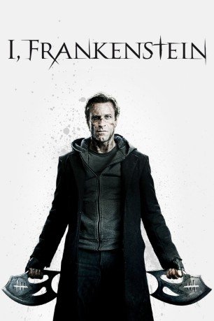
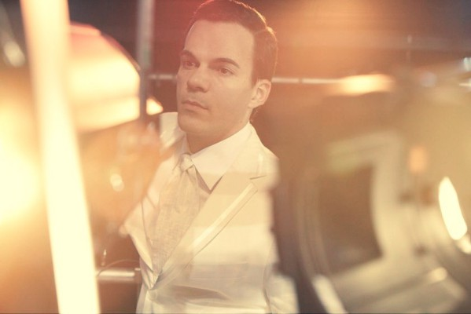

#2911 I, Frankenstein
 
 IMDB-Wertung: 5.1 / 10
IMDB-Wertung: 5.1 / 10  Metascore: 30
Metascore: 30 
Adam Frankenstein wurde von dem Wissenschaftler Dr. Victor Frankenstein erschaffen und zum Leben erweckt. Das aus Leichenteilen zusammengeflickte Monster findet sich in einer dystopischen Welt wieder, in der sich Menschen und Dämonen im Krieg befinden. Der unsterbliche Adam beschützt die Menschen vor den finsteren Gestalten der Unterwelt, doch er gerät zwischen die Fronten zweier unsterblicher Clans. Das Schicksal der Menschheit liegt in seinen Händen, denn er hat Fähigkeiten, die Menschen nicht haben. Doch die Gargoyles und die Dämonen haben großes Interesse an Adams Geheimnis.
Jahr: 2014
Dauer: 92 Minuten
FSK: 12
Land: Australien Studio: Splendid FilmTonspuren: DTS - ,
Untertitel: Deutsch,
Auflösung: 1080p (1920x800) Größe: 8857 MB
Genre: Action, Thriller, Sci-Fi, Fantasy
Regisseur: Stuart Beattie
Drehbuch: Stuart Beattie, Kevin Grevioux, Stuart Beattie, Kevin Grevioux, Mary Shelley
Soundtrack: Reinhold Heil, Johnny Klimek
Darsteller:
 Aaron Eckhart als Adam
Aaron Eckhart als Adam Yvonne Strahovski als Terra
Yvonne Strahovski als Terra- Miranda Otto als Leonore
 Bill Nighy als Naberius
Bill Nighy als Naberius- Jai Courtney als Gideon
-  Socratis Otto als Zuriel
- Aden Young als Victor Frankenstein
- Caitlin Stasey als Keziah
- Mahesh Jadu als Ophir
- Steve Mouzakis als Helek
 Nicholas Bell als Carl Avery
Nicholas Bell als Carl Avery- Deniz Akdeniz als Barachel
- Chris Pang als Levi
 Kevin Grevioux als Dekar
Kevin Grevioux als Dekar- Bruce Spence als Molokai
- Virginie Le Brun als Elizabeth Frankenstein
- Penny Higgs als Sargon
 Goran D. Kleut als Rekem
Goran D. Kleut als Rekem- Yasca Sinigaglia als Igal
- John Reynolds als Jannes
- Rick Tonna als Bar Bouncer
- Bryce Hardy als Alley Demon #2
- Marky Lee Campbell als Police Officer
- Warwick Sadler als Forest Demon #1
- Chris Anderson als Train Station Cleaner
- Paul Allica als Bar Tender , uncredited
- Michael M. Foster als Demon , uncredited
- Andy Hazel als Sailor , uncredited
- Angela Kennedy als Demon , uncredited
- Anthony Ting als Subway passenger , uncredited
- Alexis Watt als Hot Minon Demon , uncredited
 Daniel Westwood als Casino Player , uncredited
Daniel Westwood als Casino Player , uncredited- Luke Wright als Aker , uncredited
- Nicole Downs als Procula
- Craig Brookshaw als Alley Demon #1
- Robbie Clissold als Forest Demon #2
- Jack Fieguth als Forest Demon #3
- Michael Peace als Subway Lover #1
- Sherrydayne Taela als Subway Lover #2
- Jim Petropoulos als Wessex Orderly
- Amanda Dyar als Runner , uncredited
- Minel Louis als Nightclub dancer , uncredited
- Samantha Reed als Eve , uncredited
Datei: X:\2014(G-M)\I, Frankenstein (2014, FSK12, 1920x800).mkv seit 31.12.2015
Festplatte: HD 2013(I-Z)-2014(A-Z)
 Es gibt insgesamt 136 Filme in der Gruppe '2014(G-M)'
Es gibt insgesamt 136 Filme in der Gruppe '2014(G-M)'